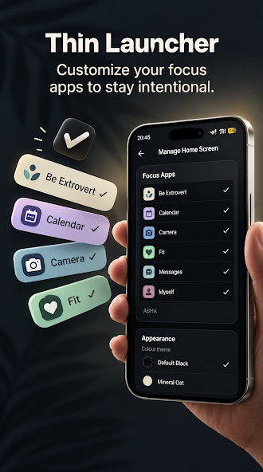

A lot of advice aimed at "phone distraction at work" assumes you can just silence everything and disappear for a few hours. For most jobs, that's not realistic — you need Slack or email reachable, you might need a work app for approvals or scheduling, and some of your personal apps genuinely matter during the day too (a banking app, a transit app, a messaging app your partner uses). The goal isn't to disappear from your phone during work hours. It's to stop your phone from presenting an equal-opportunity buffet of work apps, personal apps, and pure distraction every single time you glance at it.
The real cost of context-switching at work
Context-switching — moving your attention from one task to an unrelated one and back — has a well-understood general cost in productivity and focus research: the switch itself is fast, but returning to full concentration on what you were doing isn't. Each time your attention jumps to a notification or a reflexively-opened app, you're not just losing the ten seconds you spent on the interruption — you're paying a re-entry cost to rebuild the mental state you were in before. Over a full workday with dozens of small interruptions, that adds up to something much larger than the sum of the interruptions themselves.
This isn't a call to eliminate every interruption — some, like a message from your manager, genuinely need a quick response. It's a case for reducing the unnecessary ones: the reflexive taps that happen not because something required your attention, but because an icon was sitting there the moment your focus dipped for a second.
Meetings are a specific pressure point
A phone sitting face-up during a meeting, with a full home screen of options, is a standing invitation to half-attend. Even without a single notification firing, a crowded home screen means that any lull — a tangent, a slow point, someone else talking — presents a dozen tempting taps instantly. A smaller, more deliberate home screen doesn't eliminate the temptation to check your phone in a meeting, but it does remove most of the easy, mindless options once you do glance down, which is often enough to turn "let me just check one thing" into actually putting the phone back down.
Deep work blocks need fewer easy exits
Any task that benefits from sustained focus — writing, reviewing a long document, debugging, planning — is especially vulnerable to the same mindless-unlock pattern described above. The moment concentration gets hard (which is exactly when deep work is doing its job, right before a breakthrough), a crowded home screen gives your attention an easy, low-effort escape route. Cut that home screen down to a handful of apps you've chosen on purpose, and the automatic "let me just glance at my phone" moment has far less to land on. You're not forcing yourself to stay focused through sheer willpower — you're removing the easiest way out.
Work/life separation, without a separate work profile
Android's work profile feature exists for a reason — it fully separates work and personal apps, which some people need, especially on a company-managed device. But it's also a heavier setup than most people actually need: separate app instances, separate notifications to manage, sometimes IT involvement. For a lot of professionals, especially on a personal device used for both work and life, that's overkill for what's actually a simpler problem: "I just want my home screen to show the handful of apps relevant to right now, not a flat pile of everything."
A limited home screen gets you most of the practical benefit without any of that setup. You choose a core set — email, your team's messaging app, calendar, maybe one or two others — and that's what you see all day. Personal apps aren't deleted or hidden behind a separate mode; they're simply not sitting on the home screen competing for attention during work hours. If you need one, it's a search away. The separation is about what's visually in front of you by default, not a technical partition between two phone identities.
Setting it up for a workday

A practical approach with Thin Launcher:
- Lead with work essentials. Email, calendar, your primary messaging/collaboration app, and whatever single tool you live in most (a CRM, a docs app, a ticketing system) go on first.
- Add only the personal apps you genuinely need reachable. A banking app for an urgent transfer, a transit app for your commute — these earn a slot. A second or third social app usually doesn't.
- Use Pro's 11-app ceiling if 7 feels too tight. Some roles genuinely need a few more tools visible; the one-time Pro purchase raises the limit without adding a subscription to track.
- Reassess occasionally. If your role or tools change, your set should too — it's a five-minute adjustment, not a one-time decision set in stone.
What this won't do
Thin Launcher doesn't create an actual work profile, doesn't track your time in any app, and doesn't block anything by schedule — it's not a replacement for Android's work profile feature if your employer specifically requires that kind of separation. What it does is far simpler: it changes what you see by default, all day, so the reflexive option during a meeting, a focus block, or a slow afternoon is one of the handful of apps you actually chose — not whatever happened to be sitting on the screen.
For the broader reasoning behind why fewer visible choices leads to calmer, more intentional phone use generally, see our piece on phone minimalism and a simpler home screen. If your distraction problem leans more toward feeds and notifications specifically, the psychology of doom scrolling breaks down why those are so hard to disengage from. And if you're balancing work with coursework too, our piece for students covers the same idea applied to studying.
Give your workday a calmer default screen.
Get Thin Launcher on Google Play